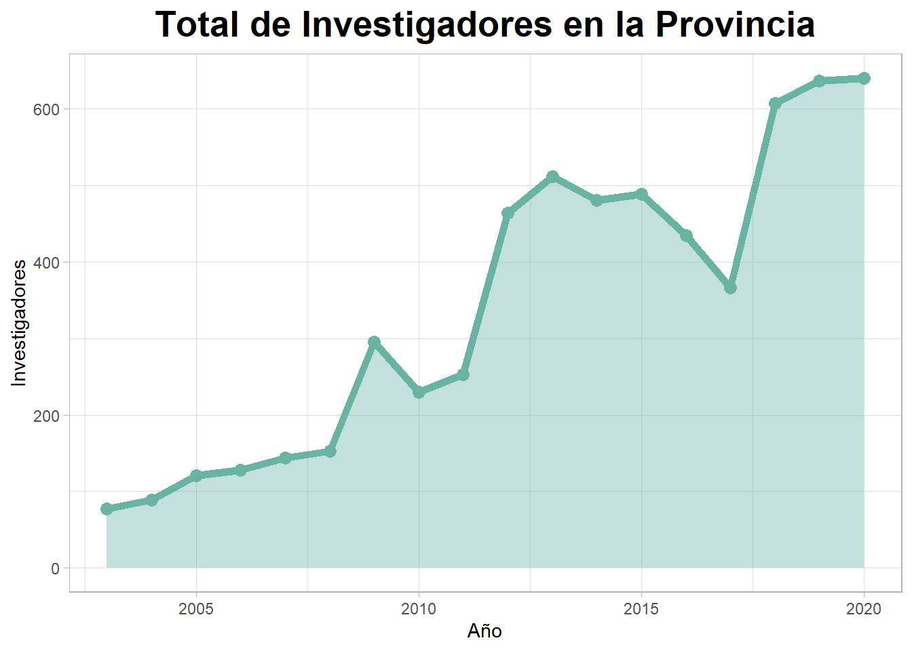

9 Industria, Innovación e Infraestructura

Objetivo 9: Construir infraestructura resiliente, promover la industrialización sostenible y fomentar la innovación
La industrialización inclusiva y sostenible, junto con la innovación y la infraestructura, pueden dar rienda suelta a las fuerzas económicas dinámicas y competitivas que generan el empleo y los ingresos. Estas desempeñan un papel clave a la hora de introducir y promover nuevas tecnologías, facilitar el comercio internacional y permitir el uso eficiente de los recursos.
Perspectiva Global
Las Naciones Unidas expresa la necesidad de los países menos desarrollados en acelerar el desarrollo de sus sectores manufactureros si desean conseguir la meta de 2030 y aumentar la inversión en investigación e innovación científicas.
El crecimiento del sector manufacturero a nivel mundial ha ido disminuyendo constantemente, incluso antes del brote de la pandemia de la COVID-19. La pandemia está afectando gravemente a las industrias manufactureras y está provocando alteraciones en las cadenas de valor mundiales y en el suministro de productos.
La infraestructura básica, como las carreteras, las tecnologías de la información y la comunicación, el saneamiento, la energía eléctrica y el agua, sigue siendo escasa en muchos países en desarrollo
El 16% de la población mundial no tiene acceso a redes de banda ancha móvil.
El efecto de multiplicación del trabajo de la industrialización tiene un impacto positivo en la sociedad. Cada trabajo en la industriA crea 2,2 empleos en otros sectores.
En los países en desarrollo, apenas el 30% de la producción agrícola se somete a procesos industriales. En los países de altos ingresos, el 98% se procesa. Esto sugiere que hay grandes oportunidades para los países en desarrollo en materia de agronegocios.
Perspectiva Local
La Provincia ha aumentado la inversión de recurso humano en I+D, para el año 2020 cuenta con 640 investigadores activos. La evolución se puede observar en el siguiente gráfico: